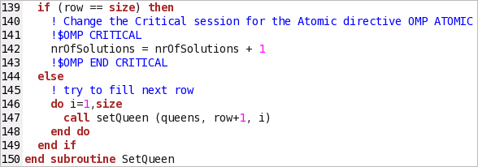
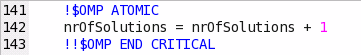
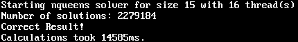

In the Source window, you located the synchronization objects
that caused significant waits while the processor cores were underutilized
. To resolve the issue, do the following:
In the Source window, you located the synchronization objects
that caused significant waits while the processor cores were underutilized
. To resolve the issue, do the following:
Open the Code Editor
Note
Depending on the sample code version, your source line numbers may slightly differ from the numbers provided in this tutorial.
Click the
 Source Editor button to open the
nqueens_parallel.f90 file in your default editor:
Source Editor button to open the
nqueens_parallel.f90 file in your default editor:

Remove Locks
The critical section introduced in line 141 protects the global variable from a race condition in a multithreaded application but it spawns a redundant synchronization. To resolve this issue, you may replace the critical section with an atomic operation as follows:
Edit like 141 to replace the OMP CRITICAL with the OMP ATOMIC directive.
Comment out or remove line 143.

Save your changes.
Recompile the Project and Check the Result
Browse to the directory where you extracted the sample code (for example, /home/vtune/nqueens_fortran/linux).
Rebuild your target in the release mode using the make command as follows:
$ make clean
$ make
The nqueens_parallel application is rebuilt.
Run nqueens_parallel as follows:
./nqueens_parallel 15

System runs the nqueens_parallel. Note that execution time reduced from 56566 ms to 14585 ms.